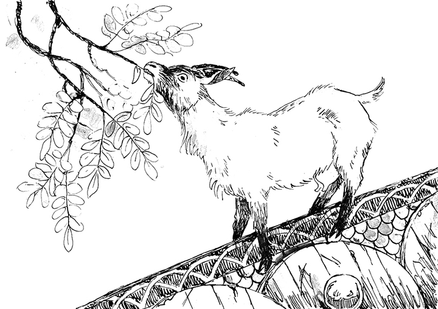

Aesir's Mead
Here we can see magical goat 'Heidrun' eating from the Yggdrasil's leaves above the roof of the Asgard's castle. Original image by Saskia (FINNGUALART)
Did you run out of Magic Mead rerserves?
Since mead was introduced in Valhalla, this drink revolutionized the world of the gods. However, it becomes increasingly scarce, mostly because of Odin, who drinks it all. Though it's really because there was only one Kvasir in existence. But don't worry, Andhrímnir has a new recipe that promises to replicate its wonderful taste.
Ingredients
- Heiðrún (or a magic goat)
Steps
- Catch Heiðrún
- Milk it and serve (there is no recipe, sorry :P)